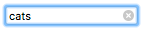
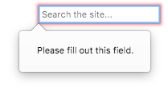

<input type="search">
Baseline Widely available
This feature is well established and works across many devices and browser versions. It’s been available across browsers since July 2015.
<input> elements of type search are text fields designed for the user to enter search queries into. These are functionally identical to text inputs, but may be styled differently by the user agent.
Try it
Value
The value attribute contains a string representing the value contained in the search field. You can retrieve this using the HTMLInputElement.value property in JavaScript.
searchTerms = mySearch.value;
If no validation constraints are in place for the input (see Validation for more details), the value can be any text string or an empty string ("").
Additional attributes
In addition to the global attributes and the attributes that operate on all <input> elements regardless of their type, search field inputs support the following attributes.
list
The values of the list attribute is the id of a <datalist> element located in the same document. The <datalist> provides a list of predefined values to suggest to the user for this input. Any values in the list that are not compatible with the type are not included in the suggested options. The values provided are suggestions, not requirements: users can select from this predefined list or provide a different value.
maxlength
The maximum string length (measured in UTF-16 code units) that the user can enter into the search field. This must be an integer value of 0 or higher. If no maxlength is specified, or an invalid value is specified, the search field has no maximum length. This value must also be greater than or equal to the value of minlength.
The input will fail constraint validation if the length of the text entered into the field is greater than maxlength UTF-16 code units long. Constraint validation is only applied when the value is changed by the user.
minlength
The minimum string length (measured in UTF-16 code units) that the user can enter into the search field. This must be a non-negative integer value smaller than or equal to the value specified by maxlength. If no minlength is specified, or an invalid value is specified, the search input has no minimum length.
The search field will fail constraint validation if the length of the text entered into the field is fewer than minlength UTF-16 code units long. Constraint validation is only applied when the value is changed by the user.
pattern
The pattern attribute, when specified, is a regular expression that the input's value must match for the value to pass constraint validation. It must be a valid JavaScript regular expression, as used by the RegExp type, and as documented in our guide on regular expressions; the 'u' flag is specified when compiling the regular expression so that the pattern is treated as a sequence of Unicode code points, instead of as ASCII. No forward slashes should be specified around the pattern text.
If the specified pattern is not specified or is invalid, no regular expression is applied and this attribute is ignored completely.
Note:
Use the title attribute to specify text that most browsers will display as a tooltip to explain what the requirements are to match the pattern. You should also include other explanatory text nearby.
See the section Specifying a pattern for details and an example.
placeholder
The placeholder attribute is a string that provides a brief hint to the user as to what kind of information is expected in the field. It should be a word or short phrase that demonstrates the expected type of data, rather than an explanatory message. The text must not include carriage returns or line feeds.
If the control's content has one directionality (LTR or RTL) but needs to present the placeholder in the opposite directionality, you can use Unicode bidirectional algorithm formatting characters to override directionality within the placeholder; see How to use Unicode controls for bidi text for more information.
Note:
Avoid using the placeholder attribute if you can. It is not as semantically useful as other ways to explain your form, and can cause unexpected technical issues with your content. See <input> labels for more information.
readonly
A Boolean attribute which, if present, means this field cannot be edited by the user. Its value can, however, still be changed by JavaScript code directly setting the HTMLInputElement value property.
Note:
Because a read-only field cannot have a value, required does not have any effect on inputs with the readonly attribute also specified.
size
The size attribute is a numeric value indicating how many characters wide the input field should be. The value must be a number greater than zero, and the default value is 20. Since character widths vary, this may or may not be exact and should not be relied upon to be so; the resulting input may be narrower or wider than the specified number of characters, depending on the characters and the font (font settings in use).
This does not set a limit on how many characters the user can enter into the field. It only specifies approximately how many can be seen at a time. To set an upper limit on the length of the input data, use the maxlength attribute.
spellcheck
spellcheck is a global attribute that is used to indicate whether to enable spell-checking for an element. It can be used on any editable content, but here we consider specifics related to the use of spellcheck on <input> elements. The permitted values for spellcheck are:
false-
Disable spell-checking for this element.
true-
Enable spell-checking for this element.
- "" (empty string) or no value
-
Follow the element's default behavior for spell-checking. This may be based upon a parent's
spellchecksetting or other factors.
An input field can have spell-checking enabled if it doesn't have the readonly attribute set and is not disabled.
The value returned by reading spellcheck may not reflect the actual state of spell-checking within a control, if the user agent's preferences override the setting.
Non-standard attributes
The following non-standard attributes are available to search input fields. Avoid using them where possible.
incremental
The Boolean attribute incremental is a WebKit and Blink extension (so supported by Safari, Opera, Chrome, etc.) which, if present, tells the user agent to process the input as a live search. As the user edits the value of the field, the user agent sends search events to the HTMLInputElement object representing the search box. This allows your code to update the search results in real time as the user edits the search.
If incremental is not specified, the search event is only sent when the user explicitly initiates a search (such as by pressing the Enter or Return key while editing the field).
The search event is rate-limited so that it is not sent more frequently than an implementation-defined interval.
results
The results attribute—supported only by Safari—is a numeric value that lets you override the maximum number of entries to be displayed in the <input> element's natively-provided drop-down menu of previous search queries.
The value must be a non-negative decimal number. If not provided, or an invalid value is given, the browser's default maximum number of entries is used.
Using search inputs
<input> elements of type search are very similar to those of type text, except that they are specifically intended for handling search terms. They are basically equivalent in behavior, but user agents may choose to style them differently by default (and, of course, sites may use stylesheets to apply custom styles to them).
Basic example
<form>
<div>
<input type="search" id="mySearch" name="q" />
<button>Search</button>
</div>
</form>
This renders like so:
q is the most common name given to search inputs, although it's not mandatory. When submitted, the data name/value pair sent to the server will be q=searchTerm.
Note:
You must remember to set a name for your input, otherwise nothing will be submitted.
Differences between search and text types
The main basic differences come in the way browsers handle them. The first thing to note is that some browsers show a cross icon that can be clicked on to remove the search term instantly if desired, in Chrome this action is also triggered when pressing escape. The following screenshot comes from Chrome:

In addition, modern browsers also tend to automatically store search terms previously entered across domains, which then come up as autocomplete options when subsequent searches are performed in search inputs on that domain. This helps users who tend to do searches on the same or similar search queries over time. This screenshot is from Firefox:

At this point, let's look at some useful techniques you can apply to your search forms.
Setting placeholders
You can provide a useful placeholder inside your search input that could give a hint on what to do using the placeholder attribute. Look at the following example:
<form>
<div>
<input
type="search"
id="mySearch"
name="q"
placeholder="Search the site…" />
<button>Search</button>
</div>
</form>
You can see how the placeholder is rendered below:
Search form labels and accessibility
One problem with search forms is their accessibility; a common design practice is not to provide a label for the search field (although there might be a magnifying glass icon or similar), as the purpose of a search form is normally fairly obvious for sighted users due to placement (this example shows a typical pattern).
This could, however, cause confusion for screen reader users, since they will not have any verbal indication of what the search input is. One way around this that won't impact on your visual design is to use WAI-ARIA features:
- A
roleattribute of valuesearchon the<form>element will cause screen readers to announce that the form is a search form. - If that isn't enough, you can use an
aria-labelattribute on the<input>itself. This should be a descriptive text label that will be read out by the screen reader; it's used as a non-visual equivalent to<label>.
Let's have a look at an example:
<form role="search">
<div>
<input
type="search"
id="mySearch"
name="q"
placeholder="Search the site…"
aria-label="Search through site content" />
<button>Search</button>
</div>
</form>
You can see how this is rendered below:
There is no visual difference from the previous example, but screen reader users have way more information available to them.
Note: See Signposts/Landmarks for more information about such accessibility features.
Physical input element size
The physical size of the input box can be controlled using the size attribute. With it, you can specify the number of characters the input box can display at a time. In this example, for instance, the search box is 30 characters wide:
<form>
<div>
<input
type="search"
id="mySearch"
name="q"
placeholder="Search the site…"
size="30" />
<button>Search</button>
</div>
</form>
The result is this wider input box:
Validation
<input> elements of type search have the same validation features available to them as regular text inputs. It is less likely that you'd want to use validation features in general for search boxes. In many cases, users should just be allowed to search for anything, but there are a few cases to consider, such as searches against data of a known format.
Note: HTML form validation is not a substitute for scripts that ensure that the entered data is in the proper format. It's far too easy for someone to make adjustments to the HTML that allow them to bypass the validation, or to remove it entirely. It's also possible for someone to bypass your HTML entirely and submit the data directly to your server. If your server-side code fails to validate the data it receives, disaster could strike when improperly-formatted data (or data which is too large, is of the wrong type, and so forth) is entered into your database.
A note on styling
There are useful pseudo-classes available for styling valid/invalid form elements: :valid and :invalid. In this section, we'll use the following CSS, which will place a check (tick) next to inputs containing valid values, and a cross next to inputs containing invalid values.
input:invalid ~ span::after {
content: "✖";
padding-left: 5px;
position: absolute;
}
input:valid ~ span::after {
content: "✓";
padding-left: 5px;
position: absolute;
}
The technique also requires a <span> element to be placed after the form element, which acts as a holder for the icons. This was necessary because some input types on some browsers don't display icons placed directly after them very well.
Making input required
You can use the required attribute as an easy way of making entering a value required before form submission is allowed:
<form>
<div>
<input
type="search"
id="mySearch"
name="q"
placeholder="Search the site…"
required />
<button>Search</button>
<span class="validity"></span>
</div>
</form>
This renders like so:
In addition, if you try to submit the form with no search term entered into it, the browser will show a message. The following example is from Firefox:

Different messages will be shown when you try to submit the form with different types of invalid data contained inside the inputs; see the below examples.
Input value length
You can specify a minimum length, in characters, for the entered value using the minlength attribute; similarly, use maxlength to set the maximum length of the entered value.
The example below requires that the entered value be 4–8 characters in length.
<form>
<div>
<label for="mySearch">Search for user</label>
<input
type="search"
id="mySearch"
name="q"
placeholder="User IDs are 4–8 characters in length"
required
size="30"
minlength="4"
maxlength="8" />
<button>Search</button>
<span class="validity"></span>
</div>
</form>
This renders like so:
If you try to submit the form with less than 4 characters, you'll be given an appropriate error message (which differs between browsers). If you try to go beyond 8 characters in length, the browser won't let you.
Specifying a pattern
You can use the pattern attribute to specify a regular expression that the inputted value must follow to be considered valid (see Validating against a regular expression for a crash course).
Let's look at an example. Say we wanted to provide a product ID search form, and the IDs were all codes of two letters followed by four numbers. The following example covers it:
<form>
<div>
<label for="mySearch">Search for product by ID:</label>
<input
type="search"
id="mySearch"
name="q"
placeholder="two letters followed by four numbers"
required
size="30"
pattern="[A-z]{2}[0-9]{4}" />
<button>Search</button>
<span class="validity"></span>
</div>
</form>
This renders like so:
Examples
You can see a good example of a search form used in context at our website-aria-roles example (see it live).
Technical summary
| Value | A string representing the value contained in the search field. | |
| Events |
change and
input
|
|
| Supported Common Attributes |
autocomplete,
list,
maxlength,
minlength,
pattern,
placeholder,
required,
size.
|
|
| IDL attributes | value |
|
| DOM interface | HTMLInputElement |
|
| Methods |
select(),
setRangeText(),
setSelectionRange().
|
|
| Implicit ARIA Role | with no list attribute: searchbox |
with list attribute: combobox |
Specifications
| Specification |
|---|
| HTML # text-(type=text)-state-and-search-state-(type=search) |
Browser compatibility
BCD tables only load in the browser
See also
- HTML Forms
<input>and theHTMLInputElementinterface it's based upon<input type="text">